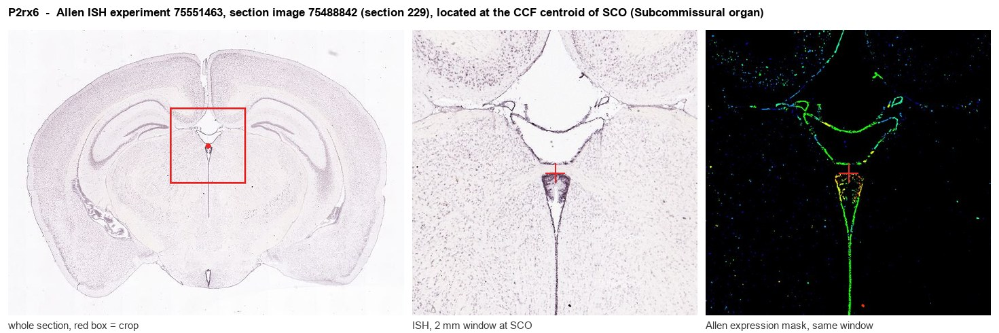
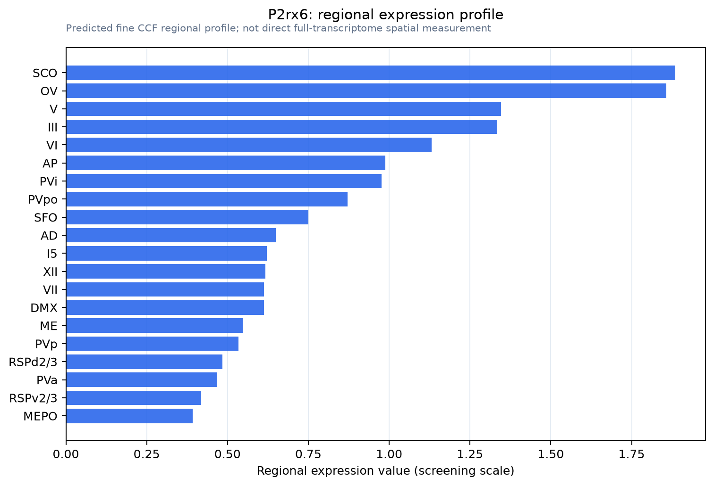

P2rx6
P2X purinoceptor 6 (P2X6) (ATP receptor) (P2XM) (Purinergic receptor) (Purinergic receptor P2X-like 1)
Spatial tier: RESTRICTED · Class: ION_CHANNEL · Top region: SCO (Subcommissural organ) · Positive regions: 16/554
48.2Discovery Score
42.8Targetability Score
CEvidence grade C
What this means: P2rx6: fine CCF profile is restricted toward SCO (top regions: SCO, OV, V, III, VI; 16 positive regions); direct spatial validation is still required.
Function in SCO: evidence, prediction, innovation
- Gene function
- P2rx6 encodes the P2X6 subunit of the ATP-gated P2X family of trimeric cation channels. Uniquely among P2X subunits it cannot form functional homomeric channels: an uncharged region in its N-terminus keeps it in the endoplasmic reticulum unless it partners P2X2 or P2X4. It therefore acts as a modulatory subunit that tunes the kinetics, ATP sensitivity and trafficking of heteromeric P2X receptors.
- Region function
- The subcommissural organ is a tiny ependymal secretory gland at the entrance of the cerebral aqueduct beneath the posterior commissure; it releases SCO-spondin into the CSF, where it condenses into Reissner's fibre, and its failure causes aqueductal stenosis and hydrocephalus.
- Published in this region
- inferred No region-specific literature found. P2X6 mRNA is widespread in brain and its trafficking and assembly biology have been worked out in cultured neurons and heterologous cells (Bobanovic 2002; Ormond 2006; Barrera 2007; reviewed by North 2002). Purinergic signalling is prominent in ependyma and choroid plexus, which is the closest cell-type parallel, but no SCO-specific study exists.
- Predicted function
- Prediction: ATP is released into CSF by ependymal and choroid-plexus cells, so P2X6 in SCO ependymocytes would most plausibly join P2X2 or P2X4 heteromers to form an ATP-gated calcium entry pathway coupling CSF purine levels to secretory activity and ciliary beating. Because P2X6 is only modulatory, knockout should shift the ATP concentration-response and kinetics of SCO purinergic responses rather than abolish them. The clean test is P2X antagonists (PPADS, suramin, TNP-ATP) applied to SCO explants with SCO-spondin secretion and ciliary beat frequency as readouts.
- Innovation
- ★★★★☆ 4/5 Purinergic control of the subcommissural organ is unexplored despite ATP being an obvious CSF-borne signal and the pharmacology being off-the-shelf.
- Tools
- P2rx6 knockout mice; broad P2X antagonists PPADS, suramin and TNP-ATP; agonists ATP and alpha,beta-methylene-ATP; anti-P2X6 antibodies; FoxJ1-CreER (JAX 027012) for ependymal conditional deletion; no P2rx6-Cre line.
- References
Direct evidence located at the region

Allen ISH experiment 75551463, section image 75488842 (section 229): the section that contains the CCF centroid of Subcommissural organ according to the Allen image-to-atlas alignment (reference_to_image), with a 2 mm window around that point. Left: whole section, red box = window. Middle: ISH signal. Right: Allen's expression-mask view of the same window. open this image in the Allen viewer
Look it up yourself: Allen Mouse Brain ISH for P2rx6Allen reference atlas: SCO (structure 599626923)ABC Atlas MERFISH viewer(in the ABC Atlas choose dataset MERFISH-C57BL6J-638850-CCF, colour cells by gene "P2rx6" or by parcellation_substructure "SCO")All genes confined to SCO + 3-D brain
Direct spatial evidence
MERFISH REGION LOCATOR

Regional expression figure

Predicted WMB × fine-CCF profile; not direct full-transcriptome spatial measurement.
Spatial profile
Evidence and specificity
- Evidence status
- PREDICTED_FINE
- Direct sources
- None; predicted localization only
- Exclusive threshold
- 12 positive regions out of 554
- Spatial specificity
- 0.411
- Top-region fraction
- 0.093
- Filter status
- PASS
Interpretation limits
- Cell-type-to-region projection is imputed expression, not direct spatial measurement.
- Adult reference atlases do not establish stability across age, sex, strain, state, or disease.
- Transcript abundance does not guarantee protein abundance or genetic-tool performance.